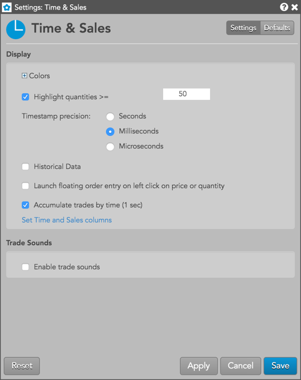
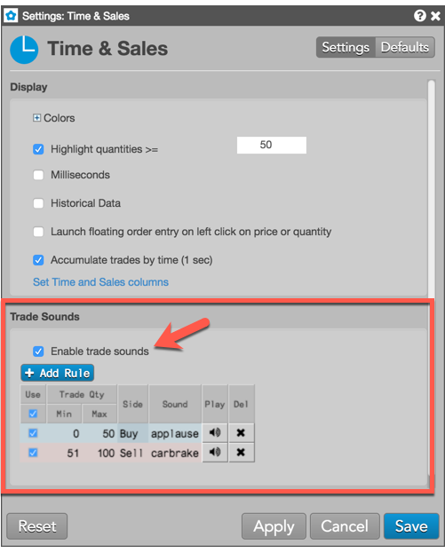

These settings affect only the selected Time & Sales widget. To update the default settings with these value for newly-opened Time & Sales widgets, or to apply them to existing opened widgets, click Defaults.

{% include settings/time-sales-settings.html %}
{% include settings/trade-sounds.html %}